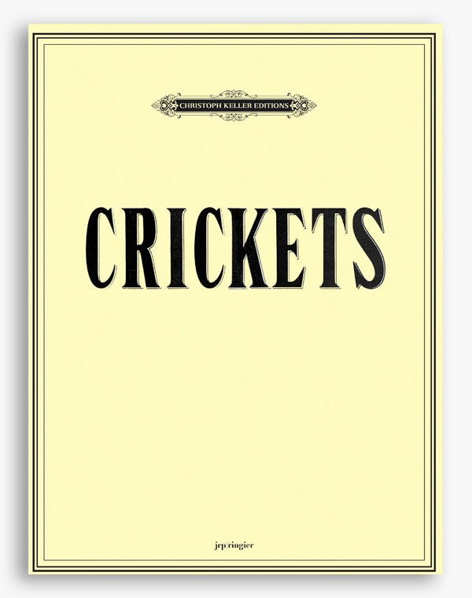

A collaboration with artist Mungo Thomson. Thomson sourced field recordings of crickets from parks and forests around the world, which were transcribed into a 25-movement score for a 17-member classical ensemble — violin, flute, clarinet, and percussion. Composed, orchestrated, and conducted by Michael Webster.
Excerpt
Greystone Mansion, Los Angeles
REDCAT, Los Angeles
The High Line, New York


Photos: Ayanohisa
Published Score
